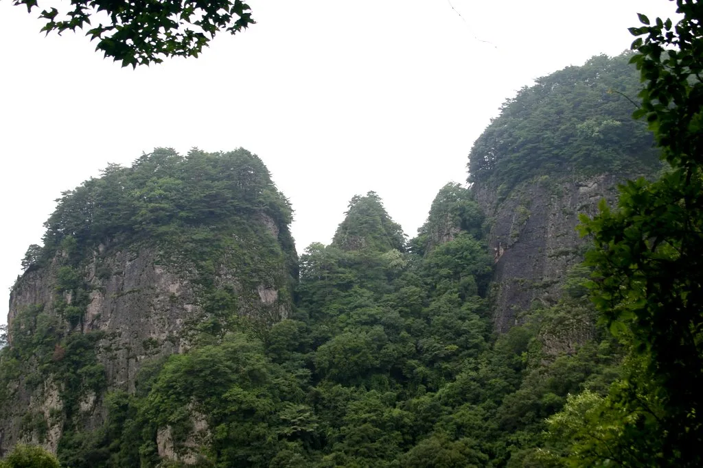
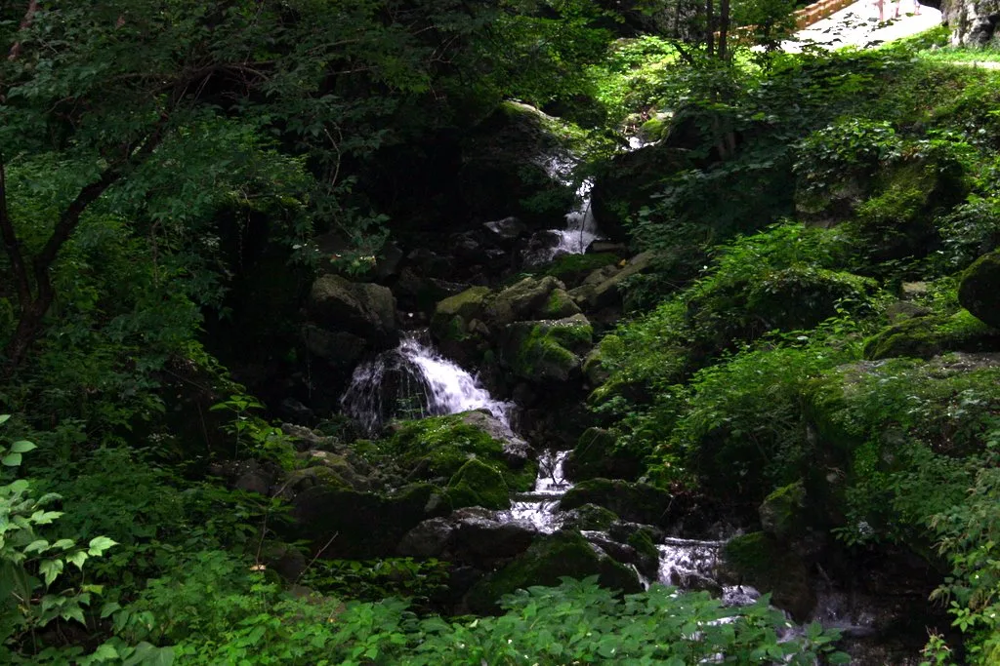
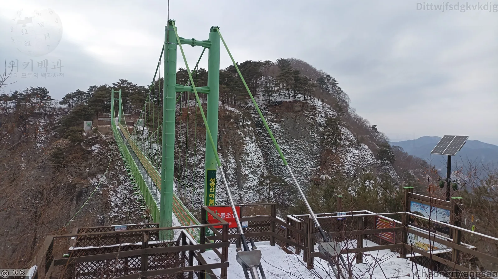
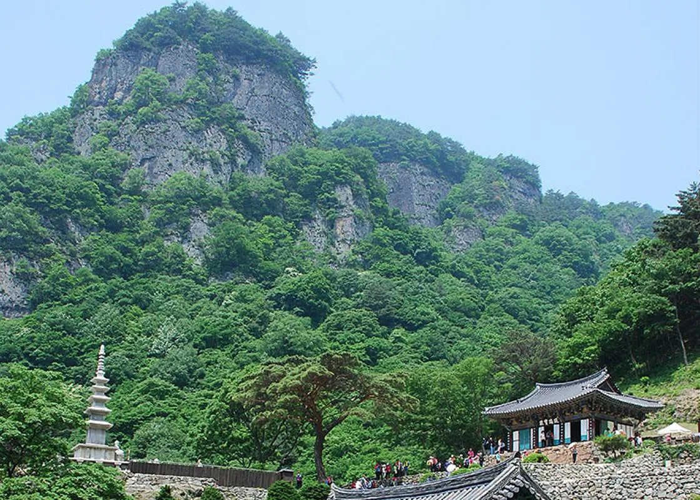
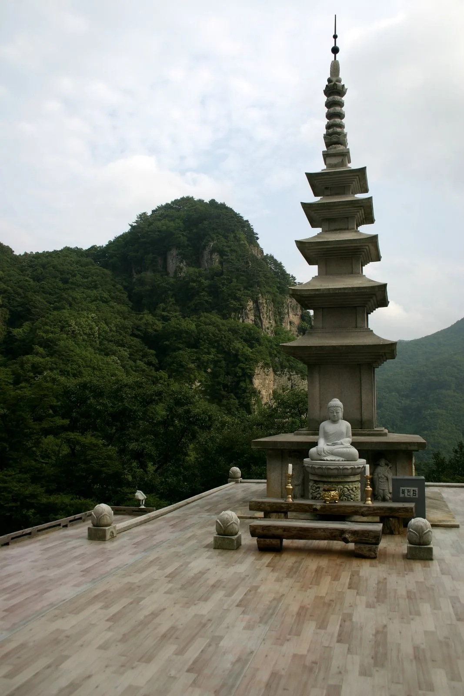
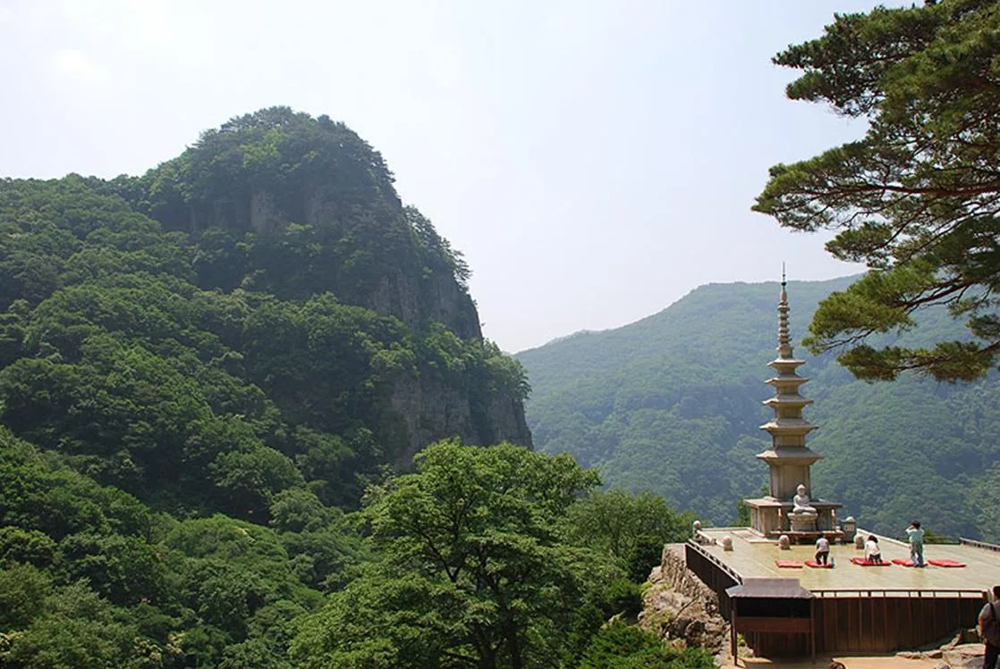
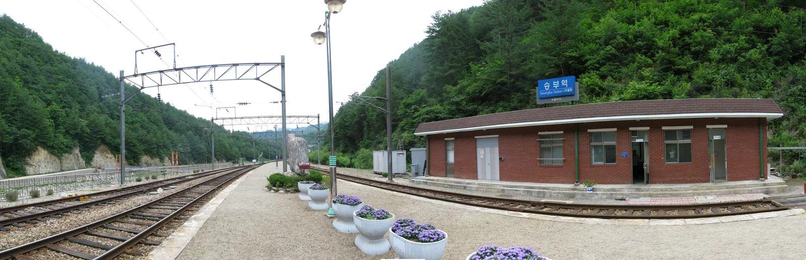
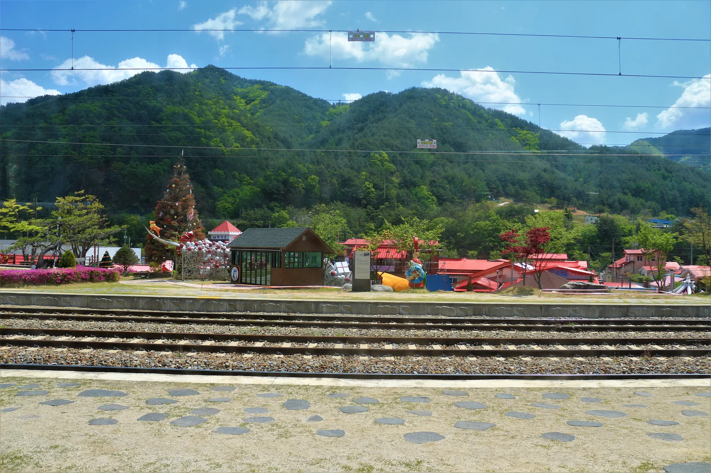

▲ 청량산 12봉우리가 병풍처럼 둘러싼 자리에 자리 잡은 청량사. 소나무 한 그루가 절 마당과 석탑을 가리듯 서 있다
경북 봉화군 명호면, 옛 이름 수산(水山)이 청량산(淸凉山)으로 바뀐 것은 조선시대부터다. 풍기군수 주세붕이 산을 유람하며 이름 붙인 12개의 기암절벽 봉우리가 연꽃잎처럼 절 하나를 감싸고 있는데, 그 안에 원효대사가 663년(신라 문무왕 3년)에 세운 청량사가 자리한다. 예로부터 '작은 금강산'이라는 뜻의 소금강으로 불렸고, 2007년에는 명승 제23호로 지정됐다. 문제는 여기부터다. 등산코스만 6가지, 청량사 안에도 유리보전·응진전·오층석탑까지 봐야 할 게 많다. 이 기사는 코스 선택부터 단풍 시기, 입장료·주차, 인근 협곡열차 연계까지 실제 방문 순서대로 정리했다.
1. 청량산은 어떤 곳인가 — 12봉우리와 소금강

▲ 청량산 12봉우리 중 일부. 조선시대 풍기군수 주세붕이 유람하며 붙인 이름이 지금까지 쓰인다 ⓒ Wikimedia Commons
청량산의 주봉인 장인봉은 해발 869.7m로, 여기에 외장인봉·선학봉·자란봉·자소봉·탁필봉·연적봉·연화봉·향로봉·경일봉·금탑봉·축융봉을 더한 12개 봉우리가 병풍처럼 절경을 이룬다. 주왕산(청송)·월출산(전남)과 함께 국내 3대 기암산으로도 꼽힌다. 과거에는 연대사를 비롯해 20여 개의 암자가 있었으나 현재 남은 건 청량사와 그 부속 전각들뿐이다. 퇴계 이황이 머물던 청량정사, 명필 김생이 글씨를 익혔다는 김생굴, 최치원의 수도처로 전해지는 풍혈대 등 역사적 흔적도 곳곳에 남아 있다.

▲ 청량산 곳곳에 흩어진 계곡. 등산로 초입부터 물소리를 들으며 걸을 수 있다 ⓒ Wikimedia Commons
2. 등산코스 6가지 — 30분 산책부터 9시간 종주까지
청량산도립공원은 난이도와 소요시간이 다른 6개의 탐방코스를 운영한다. 가장 짧은 코스는 1시간이면 충분하고, 가장 긴 코스는 하루 종일 걸리는 종주 코스다. 초행이라면 청량사와 하늘다리를 한 번에 둘러볼 수 있는 3코스 정도가 무난하고, 시간이 빠듯하면 선학정에서 청량사까지만 왕복 0.8km, 약 30분 코스로도 절 분위기는 충분히 느낄 수 있다. 참고로 4코스는 청량사를 거치지 않고 축융봉·학소대 쪽으로 도는 코스이므로, 절과 하늘다리를 모두 보려면 4코스보다는 3코스를 고르는 게 낫다.
| 코스 | 거리 | 소요시간 | 경로 개요 |
|---|---|---|---|
| 1코스(종주) | 12.7km | 약 9시간 | 안내소→축융봉→경일봉→자소봉→하늘다리→장인봉→금강대→안내소 |
| 2코스 | 6.4km | 약 5시간 | 입석→응진전→김생굴→자소봉→하늘다리→장인봉→금강대→안내소 |
| 3코스 | 5.1km | 약 3시간 | 입석→청량사→뒷실고개→하늘다리→장인봉→청량폭포 |
| 4코스 | 5.1km | 약 2시간30분 | 산성입구→밀성대→축융봉→학소대→안내소(청량사 미경유) |
| 5코스 | 2.3km | 약 1시간 | 입석→청량사→선학정 |
| 6코스 | 6.0km | 약 4시간 | 입석→응진전→경일봉→자소봉→연적봉→청량사→입석 |
어느 코스를 택하든 하늘다리는 놓치기 아까운 구간이다. 해발 800m 자란봉과 선학봉 사이를 잇는 길이 90m, 높이 70m, 폭 1.2m의 현수교로, 2008년 준공 당시 국내에서 가장 길고 높은 산악 현수교였다. 지금은 이보다 긴 출렁다리가 여럿 생겼지만, 발밑으로 기암절벽이 그대로 드러나는 아찔한 조망은 여전히 청량산의 대표 명소로 꼽힌다.

▲ 자란봉과 선학봉을 잇는 하늘다리. 길이 90m, 높이 70m로 2008년 개통 당시 국내 최장·최고 산악 현수교였다 ⓒ Wikimedia Commons
다만 매년 11월 1일부터 이듬해 5월 15일까지는 산불예방을 위해 일부 등산로가 통제된다는 점은 미리 알아둬야 한다. 단풍철 방문이라도 통제 구간이 있을 수 있으니, 방문 전 청량산도립공원관리사무소 공원시설팀(054-679-6661)으로 그 시점 개방 코스를 확인하는 편이 안전하다.
3. 청량사 볼거리 — 유리보전과 응진전, 오층석탑

▲ 청량산 기암절벽을 뒤로 하고 앉은 청량사 유리보전. 왼쪽 앞에 오층석탑이 보인다 ⓒ Wikimedia Commons
청량사의 중심 전각은 유리보전(琉璃寶殿)이다. 고려 공민왕이 홍건적의 난을 피해 이곳에 머물 때 썼다는 현판이 걸려 있어 유래가 남다르고, 1974년 12월 10일 경북유형문화재 제47호로 지정됐다. 약사여래를 모신다 해서 약사전이라고도 불리는데, 건물 안에 봉안된 청량사 건칠약사여래좌상 및 복장유물은 2016년 보물 제1919호로 지정된 국가지정문화재다. 건물(유형문화재)보다 그 안의 불상(보물)이 한 단계 더 높은 지정 등급을 받은 셈이다. 유리보전 옆 지장전에는 조선 중기에 조성된 목조지장보살삼존상(보물 제1666호, 2010년 지정)이 모셔져 있고, 경내에는 경북유형문화재 제491호인 건칠보살좌상(문수보살)도 있어 작은 절집치고 국가·지방 지정문화재 밀도가 높다. 절 뒤편으로는 응진전(應眞殿)이 있는데, 원효대사가 직접 머물렀다고 전해지는 암자로 '외청량'이라 불릴 만큼 독립된 절경을 자랑하며 뒤로는 금탑봉이 병풍처럼 둘러선다. 절 마당의 오층석탑과 그 앞에 앉은 불상도 청량산 12봉우리를 배경으로 사진이 잘 나오는 자리로 알려져 있다.

▲ 오층석탑 앞에 모셔진 불상. 청량산 봉우리를 마주하도록 자리를 잡았다 ⓒ Wikimedia Commons

▲ 오층석탑 마당에서 바라본 기암절벽. 방문객들이 자리를 잡고 앉아 풍경을 즐기고 있다 ⓒ Wikimedia Commons
과거 청량사에는 연대사를 비롯해 20여 개의 암자가 있었다고 전해지지만, 조선시대 억불정책과 화재 등을 거치며 대부분 소실됐고 지금은 유리보전과 응진전을 중심으로 한 소규모 사찰로 남아 있다. 규모는 작아졌어도 12봉우리에 둘러싸인 입지 자체가 청량사를 다른 사찰과 구분 짓는 요소다.
4. 단풍 시기 — 10월 말~11월 초가 절정
청량산 단풍은 10월 30일 전후부터 11월 7일 사이가 절정으로 예보되며, 10월 중순쯤부터 물들기 시작하는 것으로 알려져 있다. 붉게 물든 12봉우리와 회색 기암절벽, 그 사이에 앉은 고찰 청량사가 어우러지는 모습이 이 시기 청량산의 대표 풍경으로 꼽힌다. 다만 앞서 언급했듯 11월 1일부터는 산불예방 등산로 통제가 시작되므로, 단풍 절정 시기와 통제 시작일이 겹칠 수 있다는 점은 감안해야 한다. 통제 구간 밖에서도 청량사 인근 조망만으로 단풍을 즐기기에는 무리가 없다.
✅ 단풍철 방문 시 참고할 점
· 단풍 절정 예상 시기: 10월 30일~11월 7일 전후(해마다 변동)
· 11월 1일부터 이듬해 5월 15일까지 산불예방 등산로 통제 구간 발생 가능
· 통제 여부는 방문 전 관리사무소(054-679-6661)로 확인 권장
5. 입장료·주차·운영시간
청량사와 청량산도립공원 모두 입장료가 없다. 주차 역시 무료로 이용할 수 있어 경제적 부담 없이 방문할 수 있는 산이다. 청량사는 연중무휴로 오전 9시부터 오후 6시까지 개방되며, 봉화읍에서 남동쪽으로 약 26km 떨어져 있다. 자가용 이용 시 주로 입석주차장에서 산행을 시작하며, 봉화읍에서 청량사 방면으로 가는 농어촌버스(15·16번)도 운행한다.
| 항목 | 내용 |
|---|---|
| 입장료 | 무료 |
| 주차 | 무료(입석주차장 등) |
| 청량사 개방시간 | 연중무휴, 09:00~18:00 |
| 위치 | 경북 봉화군 명호면 청량산길 199-152(청량사) |
| 문의 | 청량사 054-672-1446 / 도립공원관리사무소 054-679-6661 |
6. 연계 관광 — 승부역·분천역과 백두대간협곡열차(V-트레인)

▲ '자동차로 갈 수 없는 오지역'으로 알려진 승부역. 백두대간협곡열차가 정차하는 구간 중 하나다 ⓒ Wikimedia Commons
청량산 자락은 태백산·통고산과 함께 백두대간 산줄기에 둘러싸여 있어, 등산 후 봉화의 또 다른 명물인 백두대간협곡열차(V-트레인)와 묶어 일정을 짜는 여행객이 많다. V-트레인은 영주~봉화~춘양~분천~양원~승부~철암 구간을 운행하는 관광열차로, 백호무늬 외관과 통유리창이 특징이다. 이 중 핵심 관광 구간은 분천~비동~양원~승부~철암을 잇는 27.7km로, 이 구간에서는 시속 30km로 서행하며 협곡 비경을 충분히 감상할 수 있도록 배려한다. 영주에서 분천까지는 일반 속도(시속 60km)로 이동한 뒤 분천역부터 서행 구간에 접어드는 식이다.

▲ '산타마을'로 꾸며진 분천역 일대. V-트레인 정차역 중 하나로 청량산 등산과 함께 들르기 좋다 ⓒ Wikimedia Commons
승부역은 1999년 환상선 눈꽃순환열차 운행 이후 '자동차로 접근할 수 없는 국내 최고의 오지역'이라는 별명으로 알려졌다. 승부역과 양원역에서는 정차하는 약 10분 동안 마을 주민들이 파는 간단한 먹거리와 농산물을 구입할 수 있어, 단순히 스쳐 지나가는 간이역 이상의 경험을 준다. 청량산 등산을 오전에 마치고 오후에 분천역이나 승부역 구간의 V-트레인을 타는 식으로 하루 일정을 짜면, 산과 계곡·협곡열차를 모두 아우르는 봉화 여행이 완성된다.
대한민국 구석구석에서 백두대간협곡열차 정보 확인 가능✅ 봉화 청량산·청량사, 가기 전 체크리스트
· 청량산은 12봉우리가 둘러싼 소금강, 청량사는 663년 원효대사 창건, 2007년 명승 23호 지정
· 등산코스는 1~6코스, 1시간(5코스)부터 9시간 종주(1코스)까지 선택 가능
· 하늘다리는 길이 90m·높이 70m, 2008년 국내 최장·최고 산악 현수교로 개통
· 청량사 핵심 전각은 유리보전(경북유형문화재 제47호, 내부 불상은 보물 제1919호)과 응진전(원효대사 수행처)
· 단풍 절정은 10월 30일~11월 7일 전후, 단 11월 1일부터 산불예방 등산로 통제 시작
· 입장료·주차 모두 무료, 청량사는 연중무휴 09:00~18:00 개방
· 등산 후 분천역·승부역에서 백두대간협곡열차(V-트레인)로 이어가면 하루 코스 완성